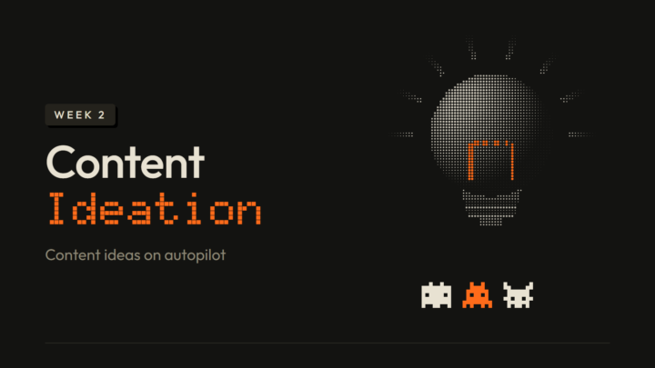

Welcome to Week 2! This week is all about content ideas: which parts you can automate, and which you don't have to. I'm also giving you a few skills and automation templates so you can hit this week's milestone.
So, as you explore this week's lessons, you will:
Learn why quality is overfeared at the start, and what quality really means
See why volume is the one thing to focus on first, and how to iterate as you go
Find the well of knowledge for your niche and get ideas from it with Claude
Use outliers to find ideas that are already proven to work
Keep your own ideas in the mix, because you can't automate those
By the end of this week, you'll have posted one of your ideas, and brainstormed at least 3 content ideas 🔥